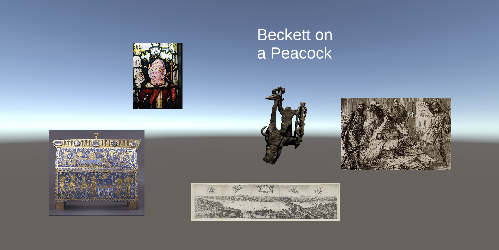

...
Reading Responses
The reading Man-Computer Symbiosis explains the potential interactions humans will have with computers. I agree that it will be efficient for the computers to do the routine work. However, I don’t trust computers to let them facilitate formulative thinking. For example, I would not want a computer to make a critical decision about my health. I don’t think that speech communication between human operators and computing machines is desirable especially because there are so many different languages and accents. I also wonder what will happen to the existence of humans if people and scientists will keep on trying to depend on computers. The more scientists try to advance computers the more we cannot rely and live our everyday lives without them.
The reading The Ultimate Display discusses the different types of display. I think he made an important point about how there is no reason why the objects displayed by a computer have to follow the ordinary rules of physical reality with which we are familiar. I also think that the idea of the ultimate display is interesting- “A room within which the computer can control the existence of matter. A chair displayed in such a room would be good enough to sit in. Handcuffs displayed in such a room would be confining, and a bullet displayed in such a room would be fatal. With appropriate programming such a display could literally be the Wonderland into which Alice walked.” Although this is a valid argument for the ultimate display, we do not need this ultimate display in reality and it goes too far.
The reading A Survey of Augmented Reality Technologies, Applications and Limitations provides lots of context and application for AR. I thought the brief history of AR was interesting because it shows how AR has become what it is today. The UI aspect of AR is interesting because there is interaction between different spaces. The numerous applications about AR shows how it can help people’s everyday lives. I especially think the medical applications would be important. I also think it is important to think about the use of the product because without a purpose to the technological device the product will fail.
Assignment
Prompt- Develop a Unity application which tells a story about an object (a 3D model) through text and images. Use at least 4 text fields and 4 images. Make your story change over time by writing a timer script which will change the content of at least one image and/or one text field. For example, after 10 seconds, an image could switch from the picture of a water fountain to a water bottle. You can choose to be as explicit or as you want about how the information relates to the object
 Link to Project File